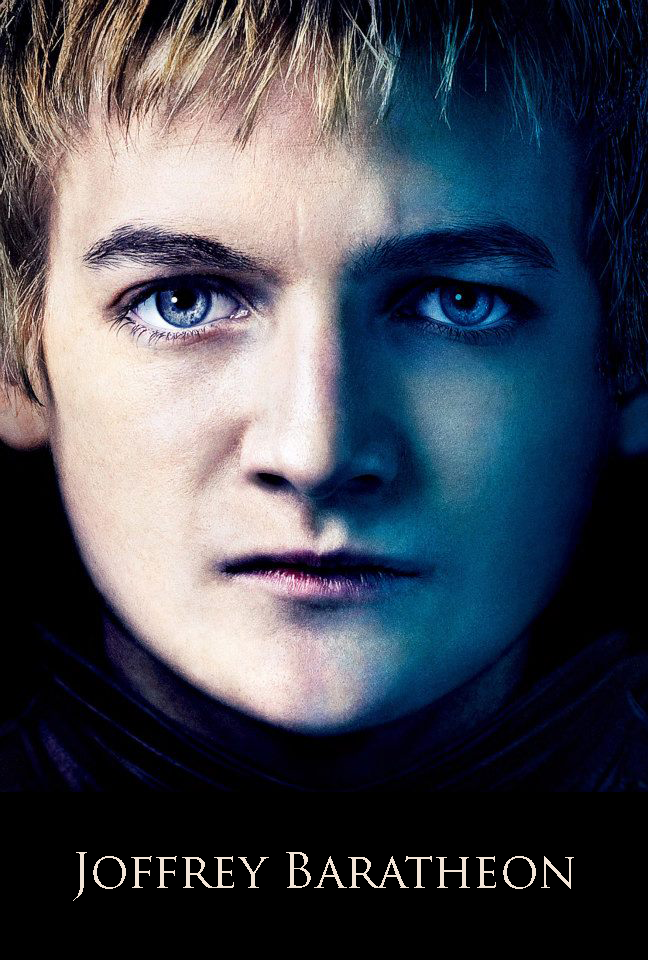

|

|
Joffrey Baratheon
Joffrey Baratheon is the eldest son and heir of King Robert Baratheon and Queen Cersei Lannister. However, his real father is Jaime Lannister, the queen's brother. He is 12 years old at the beginning of the series and later becomes the second House Baratheon king to sit on the Iron Throne.
Character and Appearance
Joffrey was strong-willed as a child and has an uncontrollable temper not unlike his mother's and an unchecked sadistic streak. He has little sense of right or wrong, which often leads him to trouble, especially when he loses his temper and when things go wrong, he always blames the problems on others. Despite being willfull he is reckless, vicious, cruel and not very intelligent all of which combine to make him prone to irrational and bad judgements.
Joffrey has the Lannister look of his parents, he is tall for a boy his age, with blond curly hair, and known to be handsome. He has bright green eyes, pouty lips and an evil sneer. this collection of images. He always wears the finest clothing and accents, as befits the royal heir and king.
History
Joffrey was born of incest to Queen Cersei Lannister and her brother Jaime. However, the truth of his birth has been kept a secret and he was presented to the world as the son of King Robert Baratheon and heir to the Iron Throne. He grew up as a spoiled and indulgent child with a cruel streak within him. Robert never questioned the boy's parentage, but it is made clear throughout the books that he was deeply disappointed with his 'son' and felt little affection for Joffrey. By contrast, it is also implied in the book that Joffrey craved Robert's respect and approval, and many of his acts were done in an effort to live up to his 'father's' standards.
Once after learning a kitchen cat was pregnant, Joffrey killed the animal and cut open its belly to see the kittens inside. He showed one of the unborn kittens to his "father". Robert was so shocked and angry he hit the boy so hard it knocked out two of his baby teeth. Cersei also remarks that Robert would have beaten the boy if she'd allowed it.[5] It is also implied Joffrey bullied his younger brother Tommen.
|